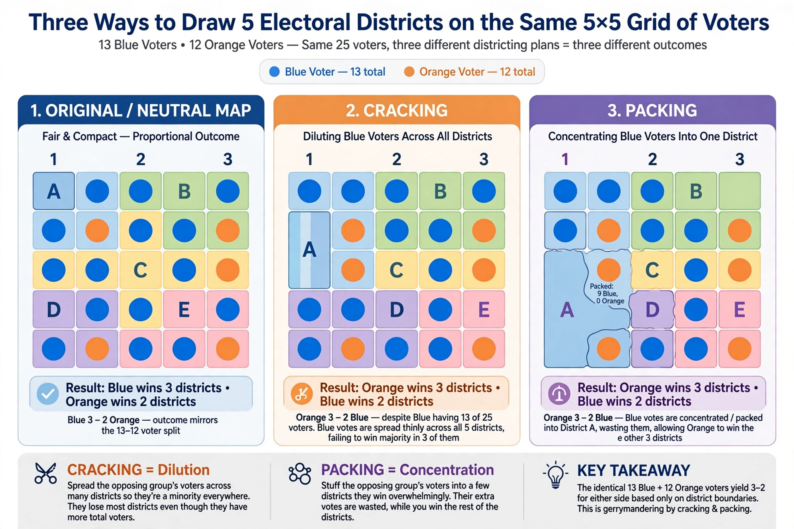

| Partisan gerrymandering | |
|---|---|
| Techniques | Cracking; packing; hijacking; kidnapping |
| Term origin | Elbridge Gerry, Massachusetts, 1812 |
| Key U.S. cases | Baker v. Carr (1962); Davis v. Bandemer (1986); Vieth v. Jubelirer (2004); Gill v. Whitford (2018); Rucho v. Common Cause (2019) |

Partisan gerrymandering is the practice of drawing electoral district boundaries to favour one political party, its candidates, or a particular class or group of people. The word "gerrymander" combines the name of Massachusetts governor Elbridge Gerry, who signed a redistricting bill in 1812, with "salamander", the shape ascribed to one of its contorted districts in a famous political cartoon.
The two principal strategies are cracking — diluting the voting power of an opposing party's supporters by spreading them across many districts — and packing — concentrating them in a small number of districts to reduce their influence elsewhere. Modern redistricting uses census data, precinct-level election results and computing to engineer maps with predictable partisan outcomes, often measured by metrics such as the efficiency gap.
Although racial gerrymandering is unconstitutional under the Voting Rights Act and the Equal Protection Clause, the Supreme Court struggled for decades to find a manageable standard for partisan claims under the Elections Clause framework. In Rucho v. Common Cause (2019), a 5–4 Court led by Chief Justice John Roberts held that partisan gerrymandering claims present nonjusticiable political questions beyond the reach of federal courts, leaving remedies to Congress and the states. Several states have adopted independent redistricting commissions in response.